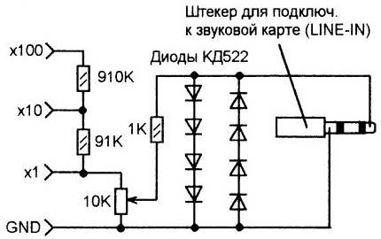
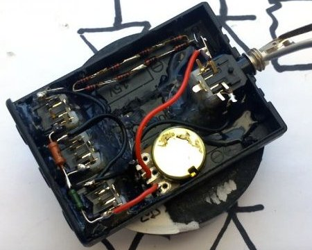
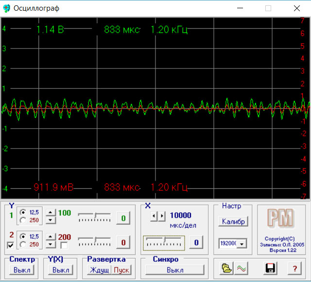
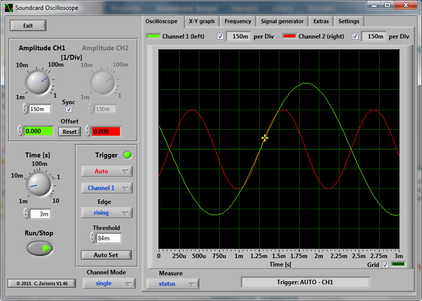
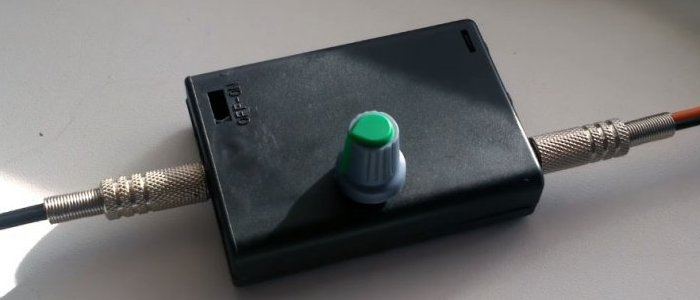

Осциллограф из компьютера
Не секрет, что у начинающих радиолюбителей не всегда есть под рукой дорогое измерительное оборудование. К примеру осциллограф, который даже на китайском рынке, самая дешевая модель стоит порядка нескольких тысяч. Бывает осциллограф нужен для ремонта различных схем, проверка искажений усилителя, настройки звуковой техники и т.п. Очень часто низкочастотный осциллограф используется при диагностике работы датчиков в автомобиле.
В этом ряде случаем вам поможет наипростейший осциллограф, сделанный из вашего персонального компьютера. Нет, ваш компьютер никак не придется разбирать и дорабатывать. Вам понадобится всего на всего спаять приставку – делитель, и подключить её к ПК через звуковой вход. А для отображения сигнала установить специальный софт. Вот за пару десятков минут у вас появится собственный осциллограф, который вполне может сгодится для анализа сигналов. Кстати можно использовать не только стационарный ПК, но и ноутбук или нетбук.
Конечно, такой осциллограф с большой натяжкой сравним с настоящим прибором, так как имеет маленький диапазон частот, но вещь в хозяйстве очень полезная, чтобы посмотреть выхода усилителя, различные пульсации источников питания и т.п.

Рис. 1 - Схема приставки
Схема проста и не потребует много времени для её сборки. Это делитель - ограничитель, который защитит звуковую карту вашего компьютера от опасного напряжения, которое вы можете случайно падать на вход. Делитель может быть на 1, на 10 и на 100. Переменным резистором регулируется чувствительность всей схемы. Подключается приставка к линейному входу звуковой карты ПК.
Собираем приставку
Можно взять бокс от батареек как я или другой пластиковый корпус.

Рис. 2 - Конструкция приставки
Программное обеспечение
Программа «осциллограф» будет визуализировать сигнал, поданный на вход звуковой карты.
Варианты скачивания:
- Вариант 1. Простая программа без установки с русским интерфейсом.
скачать avangard.zip [329,85 Kb]
Рис. 3 - Интерфейс простой програаммы с русским интерфейсом
- Вариант 2. Интерфейс на английском, с установкой
Скачать
Рис. 4 - Интерфейс програаммы с английским интерфейсом
Если у вас уже установлен микрофон, то после установки и запуска программы можно уже будет наблюдать звуковые волны, которые поступают в микрофон. Значит все хорошо.
Для приставки никаких драйверов больше не потребуется.
Подключаем приставку ко линейному или микрофонному входу звуковой карты и пользуемся на здоровье.

Рис. 5 - Внешний вид приставки
Источники:
sdelaysam-svoimirukami.ru - Простейший осциллограф из компьютера